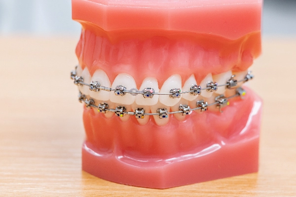
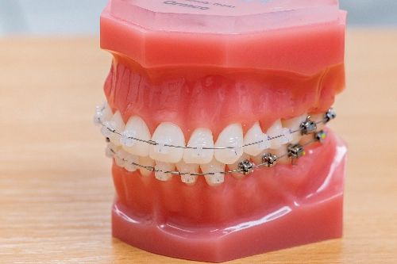
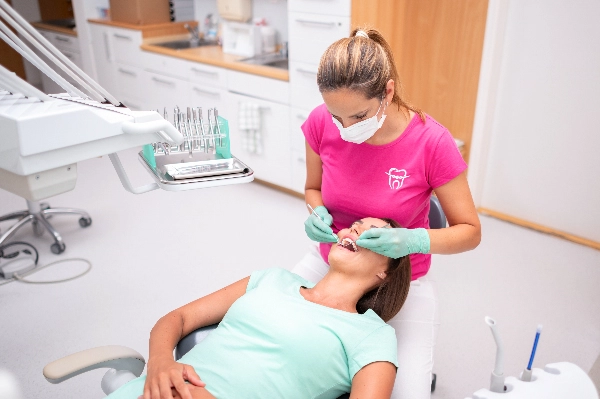

Aktuality
Nové pacienty budeme opět přijímat od září!Ordinační hodiny
Pondělí 7:00 - 14:30 Úterý 7:00 - 14:00 Středa 7:00 - 14:30 Čtvrtek 7:00 - 14:00 Pátek 7:00 - 13:00Jak to u nás chodí?
Pokud Vám Váš zubní lékař sdělil, že potřebujete Vy či Vaše dítě rovnátka nebo jste se rozhodli sami, vystaví Vám ideálně Váš zubní lékař doporučení, které si přinesete s sebou na vstupní konzultaci. Můžete samozřejmě přijít i bez doporučení, ale je vždy lepší ho mít. Vstupní konzultace u dětí do 22 let je nezávazná a zcela zdarma. Dospělým od 22 let pojišťovny již léčbu nehradí a kompletní léčbu včetně konzultace si pacient hradí sám. Na vstupní konzultaci ortodontista určí typ Vaší vady a probere s Vámi léčebné možnosti. Pokud již bude vhodný čas na léčbu a Vy s ní budete souhlasit, provedou se otisky Vašeho chrupu, fotografie a rentgenové snímky potřebné k tvorbě léčebného plánu nejvhodnějšího pro Váš typ vady.
- Sundávací rovnátka jsou hotova zpravidla do týdne. Na další kontroly se chodí cca po 2 měsících
- Po aplikování rovnátek na pevno následují kontroly po 6-10 týdnech, kdy se vyměňují dráty, které zuby pohybují a zuby se sunou do žádoucí pozice. Doba léčby trvá cca 2-3 roky.
- Foliová rovnátka jsou zhotovena pomocí scanu zubů, které se posílají do USA. V rámci další návštěvy Vám na PC ukážeme 3D model Vašeho chrupu, přesný průběh léčby s pohybem zubů až do finálního výsledku léčby. Pokud plán odsouhlasíte, za měsíc příjdete na nasazení attachementů a předání prvních sad folií. Následné kontroly jsou zhruba po 3 měsících.
Typy rovnátek
Fóliová rovnátka
Foliová rovnátka jsou vhodná pro všechny bez omezení věku. V naší ordinaci pracujeme s rovnátky Invisalign a Spark. Foliová rovnátka je třeba mít v ústech téměř celý den (22 hodin denně). Výhody foliových rovnátek: jsou neviditelné, nebolí, snadno se čistí, neomezují v jídle a snadná možnost sundání. Na některé zuby se nalepí droboučké výstupky v barvě zubu (attachementy), přes které si pacient nasazuje průhledné folie.
Cena: od 50 000 Kč
dle
závažnosti vady a počtu folií
Fixní aparáty (zámečky)
rovnátka Damon
Na zuby se lepí zámečky, drátek je v zámečcích přichycen klipem. Již téměř nepoužíváme zámky s gumičkami. Výhody Damon systému jsou: lépe se čistí, léčba je rychlejší, méně nepřijemné v začátcích léčby a výsledný širší (americký) úsměv je mnohem hezčí.
Cena: od 40 000 Kčkeramická rovnátka
Keramická rovnátka fungují na podobném principu jako rovnátka kovová, z hlediska estetiky se však jedná o daleko přijatelnější variantu. Namísto kovových zámečků jsou používány zámečky keramické, které splynou s barvou zubů.
Cena: od 50 000 KčSnímací aparáty
Vhodné ve smíšeném chrupu, kdy děti mají ještě některé zuby dočasné (mléčné). Plastové destičky se šroubky. Nosí se převážně k večeru a na noc. Na rozdíl od rovnátek fixních neovlivňují výrazně polohu zubů, ale harmonizují správný růst a vývoj čelistí. Zuby pak mají v období výměny chrupu větší šanci prořezávat správně, bez rotací a výrazného stěsnání. Můžete si vybrat jakoukoliv barvičku rovnátka a různě je i namíchat dle libosti Vaší ratolesti. Kontroly jsou cca po 2 měsících.
Cena: od 1 800 KčNáš tým
Fotogalerie
Toto je Gallery slider s fotkami z ordinace. Pou6ijte tlačítka k posunování
Image 3 of 5
